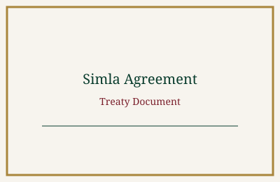
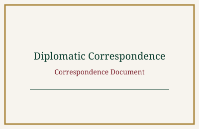

Documents
This section of the archive holds treaties, declarations, and official correspondence from the 1971 Liberation War. Each entry can be filtered by type and opened for a full description along with its publication date and source information.

Treaty
Instrument of Surrender
Dated 16 December 1971

Treaty
Simla Agreement
Dated 2 July 1972

Declaration
Proclamation of Independence
Dated 10 April 1971
Declaration
Radio Declaration of Independence
Dated 26 March 1971

Correspondence
Telegram to the United Nations
Dated April 1971
Correspondence
Diplomatic Cable from Dhaka
Dated 6 April 1971

Declaration
Kalurghat Radio Declaration
Dated 27 March 1971